Guide
Simple Boot Mock Server is a powerful mock service that supports a JavaScript (GraalJS) script engine, allowing you to dynamically generate response data by writing scripts, enabling highly flexible mock logic.
Installation
1. Download & Run
Download the latest release zip: GitHub Releases
Note: Local execution requires Java environment (JRE/JDK 11+).
- Download and extract the zip file.
- Run
bin/start.sh(Linux/macOS) orbin/start.bat(Windows).
2. Docker Deploy
Containerized deployment with Docker is the simplest and fastest method:
docker run -d -p 9086:9086 fugary/simple-boot-mock-server:latestDocker Hub URL: fugary/simple-boot-mock-server
Docker Configuration
Supports the following environment variables via (-e):
| Variable | Default | Description |
|---|---|---|
JAVA_OPTS |
-Xmx512M |
JVM startup arguments |
MOCK_DB_TYPE |
h2 |
Database type, supports h2 or mysql |
MOCK_DB_DATA_DIR |
/data |
H2 database files path (recommended to mount) |
MOCK_DB_H2_CONSOLE |
false |
Whether to enable H2 console |
MOCK_DB_MYSQL_SERVER |
localhost |
MySQL server address (mysql mode only) |
MOCK_DB_MYSQL_PORT |
3306 |
MySQL port (mysql mode only) |
MOCK_DB_MYSQL_DBNAME |
mock-db |
MySQL database name (mysql mode only) |
MOCK_DB_USERNAME |
root |
Database username |
MOCK_DB_PASSWORD |
12345678 |
Database password |
MOCK_DB_POOL_SIZE |
5 |
Database connection pool size |
Example: Using MySQL
docker run -d -p 9086:9086 \
-e MOCK_DB_TYPE=mysql \
-e MOCK_DB_MYSQL_SERVER=192.168.1.100 \
-e MOCK_DB_USERNAME=root \
-e MOCK_DB_PASSWORD=secret \
fugary/simple-boot-mock-server:latestBasics
Login
After default startup, visit: http://localhost:9086
The system comes with two built-in accounts:
| Role | Username | Password | Description |
|---|---|---|---|
| Admin | admin |
12345678 |
Has all permissions |
| User | mock |
mock |
Can only manage their own projects |
Change Password
Please change your password immediately after logging in. Click your avatar in the top right to enter [Profile], clear the old password, and set a new one.
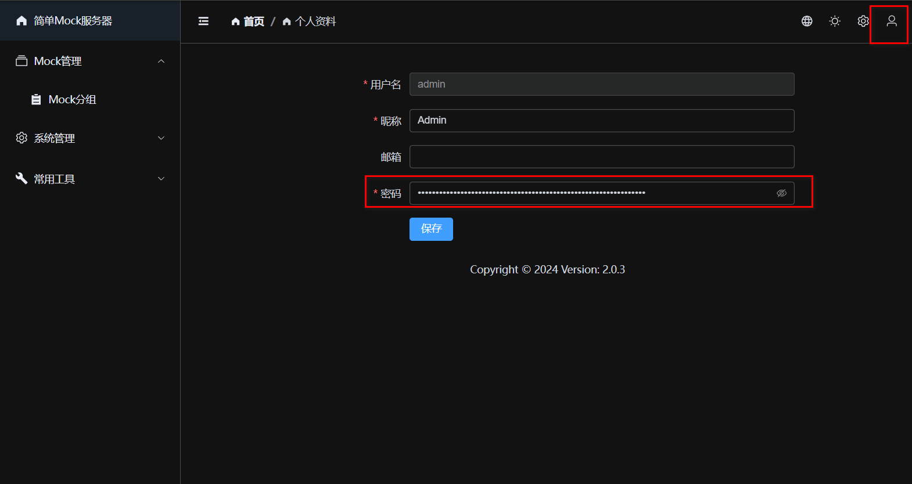
Mock Groups
Mock Groups are used to organize and manage APIs. Each group corresponds to a set of API interfaces.
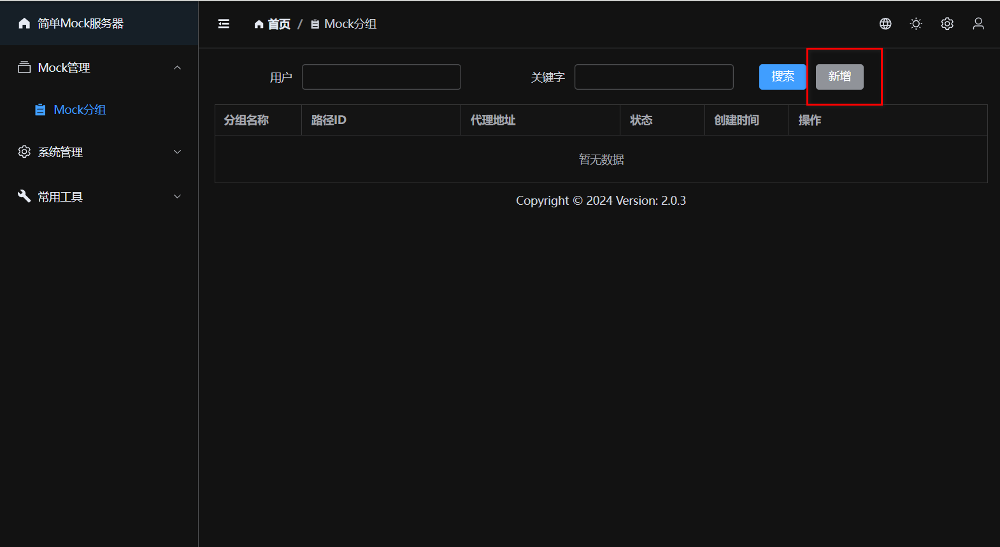
Add Group
Click [New] and fill in the [Group Name]. You can directly set a [Proxy URL]; when no Mock rules match, requests will be automatically forwarded to this address.
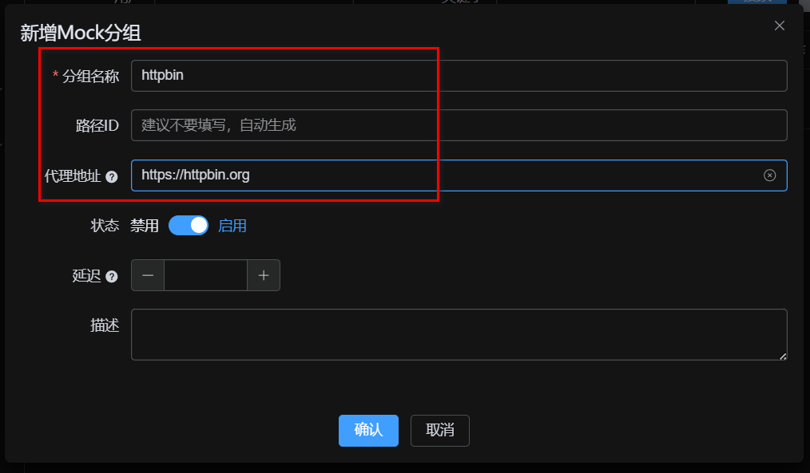
Mock Scenarios
Scenarios are used to manage different testing states within the same API collection (e.g., normal, exception, timeout).
- Because different test cases often require the API to exhibit different responses, creating and switching scenarios allows you to 1-click switch the active response state for all requests under the entire group.
- A group will always have a default scenario, and all request responses can belong to a specific scenario.
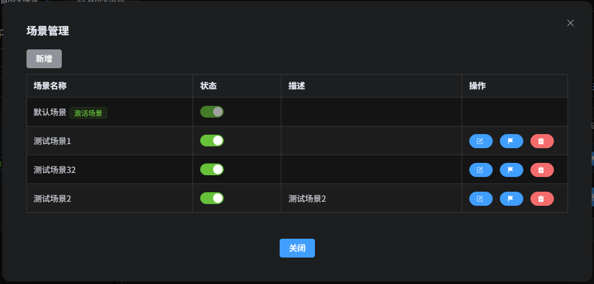
Activate Scenario
In the scenario management list, click the [Activate] button to set it as the currently active scenario. After activating a specific scenario, all responses associated with that scenario will take effect; if there is no specific scenario response, it degrades to use the default scenario's response. When modifying response data, you can also specify which exact scenario it belongs to.
Mock Requests
A Mock Group can contain multiple Mock Requests. A request is uniquely identified by its Path, Method, and Match Pattern.
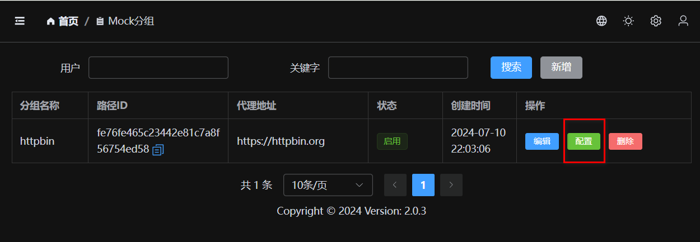
Create Request
Fill in the request path (e.g., /api/user/info) and request method.
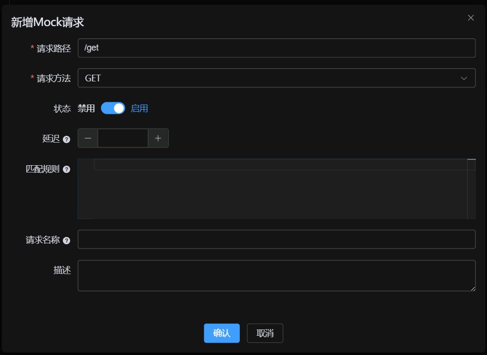
Test Request
After saving, you can click the [Test] button to test the API directly.
- If no response and no proxy is configured: Returns 404.
- If proxy is configured: Forwards request to proxy address.
- If response is configured: Returns configured Mock data.
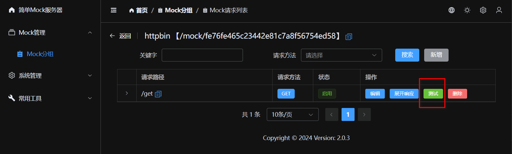
Mock Responses
Each request can be configured with multiple response data (e.g., success, fail, exception) to easily cover different testing scenarios.
Create Response Data
Supports configuring HTTP status codes, response headers, delay times, etc. The response body supports formats such as JSON and XML.
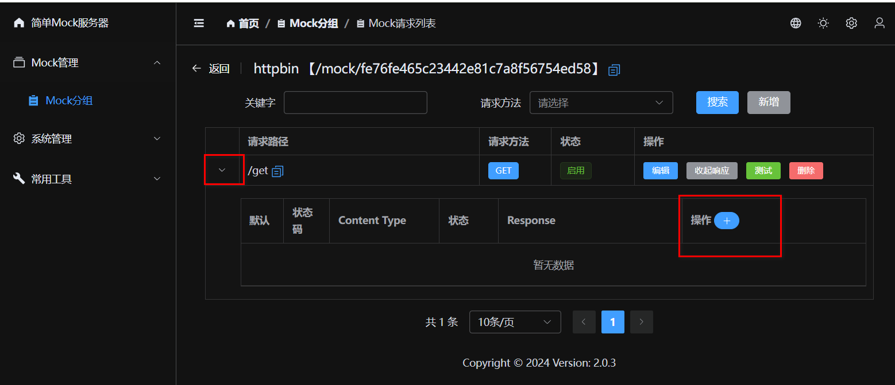
Default Response & Switching
When there are multiple response data entries, you can click [Set Default] to specify the currently active response. This is very useful for quickly switching between "Success" / "Fail" scenarios.
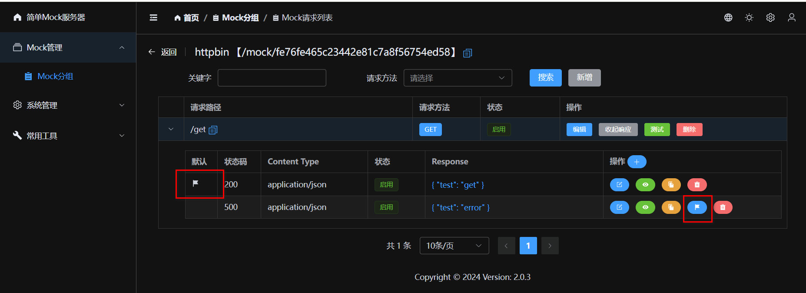
History Versions
Every modification to the response data automatically records a history version, supporting version comparison and rollback.
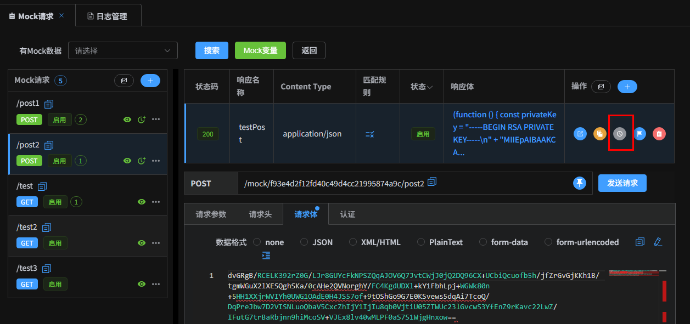
Request Object
| Property | Description |
|---|---|
request.body |
Body content object |
request.bodyStr |
Body raw content string |
request.headers |
Request headers Map |
request.parameters |
Query parameters |
request.pathParameters |
Path parameters |
request.params |
Merged Query and Path parameters (shortcut access) |
Response Object
| Property | Description |
|---|---|
response.statusCode |
Status code (default 200) |
response.headers |
Response headers Map |
response.body |
Response body object |
response.bodyStr |
Response body string (raw content) |
response.headers |
Response headers Map (modifiable) |
JS & Mock.js Support
The system has a built-in JavaScript engine (based on JDK ScriptEngine), supporting ES6 syntax (arrow functions, etc.).
Supports using Mock.js syntax to generate random data.
Mock.js Template
Mock.mock({
"code": "success",
"data|10": [{
"id": "@integer(1, 100)",
"city": "@city",
"image": "@image('200x100')"
}]
})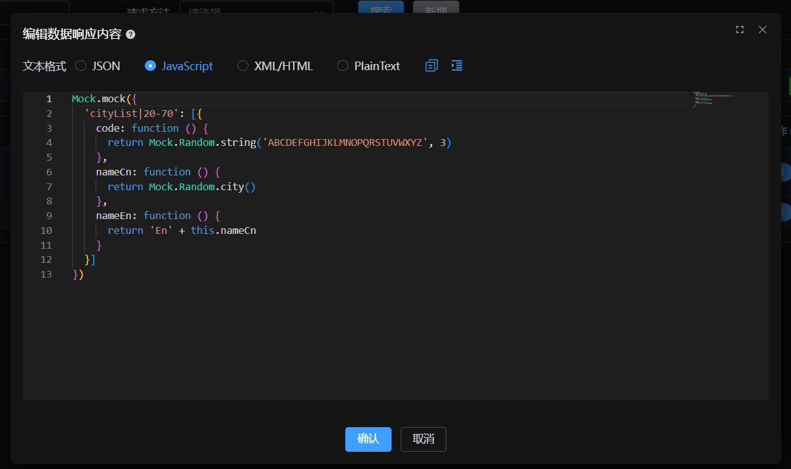
Match Patterns
When the same URL needs to return different results based on different parameters, use Match
Patterns. A pattern is a JS expression; returning true means a successful match.
// Example: Match when parameter type is 'vip' and token exists in header
request.params.type === 'vip' && request.headers.tokenYou can also use Immediately Invoked Function Expressions (IIFE) for more complex logic:
(function () {
if (request.params.name === "admin" && request.params.password === "123456") {
return true;
}
return false;
}())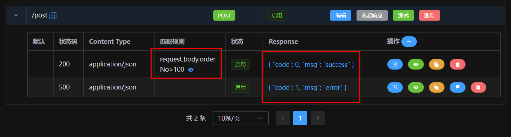
Variables Support
In response data, you can use the request object to get request parameters, achieving
dynamic responses.
request.body: Request body objectrequest.params: All parameters collection (Path + Query)request.headers: Request headers
Mock.mock({
"input_id": request.params.id,
"input_name": request.body.name,
"timestamp": Date.now()
})XML Support
XML responses also support JS template syntax and variable replacement.
<user>
<id>{{request.params.id}}</id>
<name>{{Mock.mock('@cname')}}</name>
</user>Built-in Functions
Besides Mock.js, the system provides numerous utility functions for encryption, decryption, and date processing.
| Function Signature | Description |
|---|---|
decodeHex(hex) |
Decode Hex to String |
encodeHex(data) |
Encode String to Hex |
md5Hex(data) |
MD5 Encryption (Hex output) |
md5Base64(data) |
MD5 Encryption (Base64 output) |
sha1Hex(data) / sha1Base64(data) |
SHA1 Encryption |
sha256Hex(data) / sha256Base64(data) |
SHA256 Encryption |
btoa(data) / atob(data) |
Base64 Encode / Decode |
encryptAES(data, key) |
AES Encryption (Base64) |
decryptAES(data, key) |
AES Decryption |
encryptRSA(data, key) / decryptRSA(data, key) |
RSA Encryption / Decryption |
dayjs(date) |
Date Processing (Day.js) |
xml2Json(xmlStr) |
XML String to JSON |
json2Xml(json, root) |
JSON to XML String |
fetch(url, options) |
Send HTTP Request (supports async/await) |
require(url) |
Dynamically load remote JS library (e.g. CryptoJS) |
Fetch Async Requests
You can use fetch to request third-party APIs and return results, supporting
async/await.
Get JSON Data:
(async function () {
const response = await fetch('https://httpbin.org/get?name=mock');
const json = await response.json();
return {
original: json,
processed: true,
timestamp: Date.now()
};
}())Get and Return Binary Image:
(async function () {
const response = await fetch('https://httpbin.org/image/png');
return await response.blob();
}())Dynamic Import (CryptoJS)
With require, you can load remote JS libraries, handle complex encryption logic, or use
third-party algorithms.
(async function () {
// Load CryptoJS library
const CryptoJS = await require('https://cdnjs.cloudflare.com/ajax/libs/crypto-js/4.2.0/crypto-js.min.js');
const message = "hello world";
const hash = CryptoJS.MD5(message).toString();
const sha256 = CryptoJS.SHA256(message).toString();
return {
message: message,
md5_hash: hash,
sha256_hash: sha256
};
}())Post-Processor
Post-processors allow you to perform secondary processing on the response after it's generated. Supports modifying status codes, headers, or converting the response body format.
Example: Convert XML Response to JSON
(function () {
response.statusCode = 200;
response.headers['Content-Type'] = 'application/json';
return xml2Json(response.bodyStr);
}())SSE Push (Event Stream)
For scenarios requiring simulated multi-message push (Server-Sent Events), you can return a specific array structure:
[{
"data": "Connection successful",
"delay": 0
}, {
"data": {"msg": "This is a message", "id": 1},
"delay": 1000
}, {
"data": "End",
"delay": 500
}]The system automatically recognizes this format and pushes data in segments according to the
delay milliseconds.